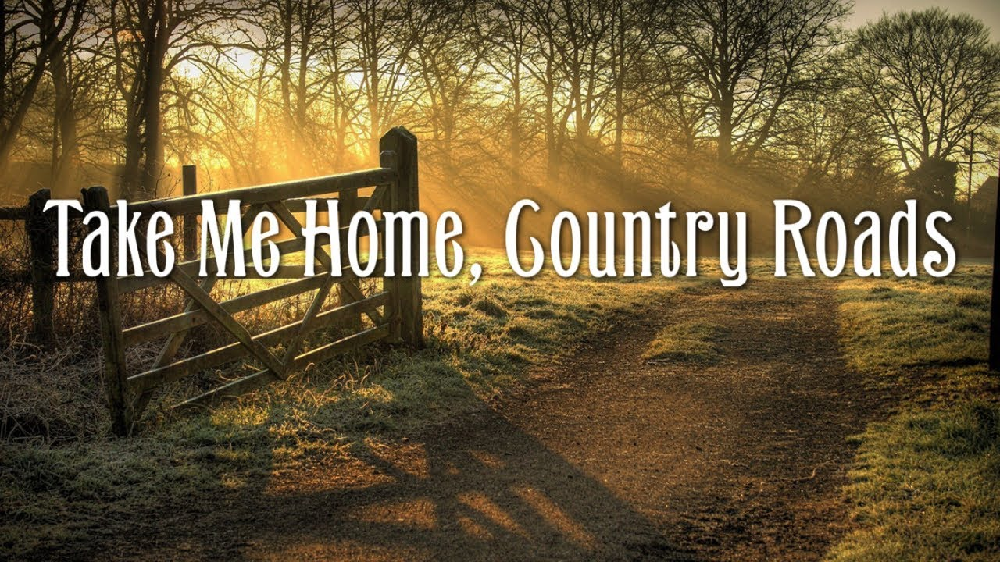

Images

Almost Heaven, West Virginia,
Blue Ridge Mountains, Shenandoah River.
Life is old there, older than the trees,
Younger than the mountains, growing like a breeze.
Chorus
Country roads, take me home
To the place I belong
West Virginia, mountain mama
Take me home, country roads.
All my memories gather 'round her,
Miner's lady, stranger to blue water.
Dark and dusty, painted on the sky,
Misty taste of moonshine, teardrop in my eye.
Chorus
Country roads, take me home
To the place I belong
West Virginia, mountain mama
Take me home, country roads.
Bridge
I hear her voice in the morning hour, she calls me
The radio reminds me of my home far away
Driving down the road, I get a feeling
That I should have been home yesterday, yesterday.
Chorus
Country roads, take me home
To the place I belong
West Virginia, mountain mama
Take me home, country roads.
Country roads, take me home
To the place I belong
West Virginia, mountain mama
Take me home, country roads.
Outro
Take me home, (Down) country roads
Take me home, (Down) country roads.